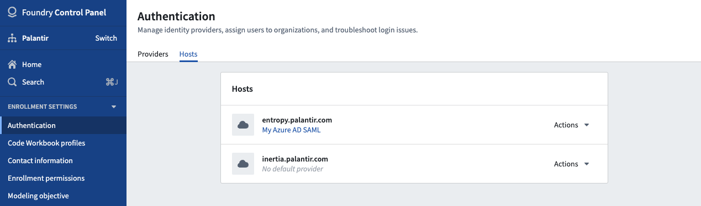
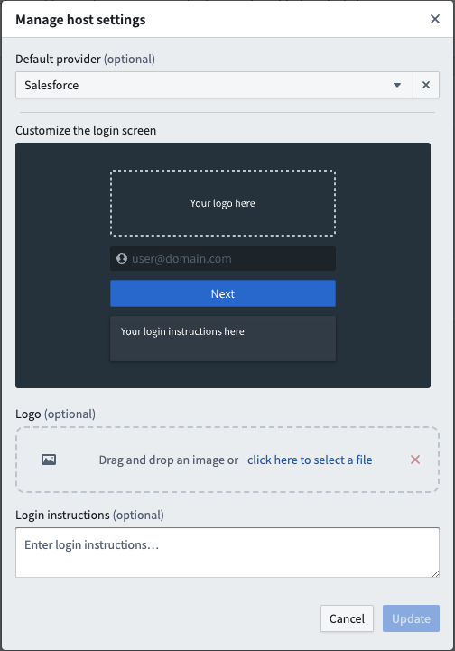

Hosts are the gateway between your web browser and access to your Foundry stack. After setting up and enabling multiple identity providers, you can optionally configure a default provider, a logo, and login instructions that users will be presented with for each host. If no default provider is configured for a host, users will be able to choose from a dropdown of enabled providers when attempting to log in.
First, navigate to the Authentication extension in Control Panel and select the Hosts tab located near the top of the page.
Here, you will see the list of hosts set up for your enrollment, and each host should be listed along with a description expressing its default provider. If a host does not have a set default provider, the description will state No default provider. The description may also display Unknown default provider if a default provider exists but you do not have the correct permissions to view provider details.

Click on the Actions menu to the right of the host you want to configure and select Manage. A pop-up will then open, and you will be able to change various settings for the host.

The first item on the pop-up will be a dropdown menu with all available identity providers to which you have access. You can then select a new default provider for that host.
The second item on the pop-up will be a field where you can upload an image by dragging and dropping directly onto the field or selecting from your file system. This image will then replace the Palantir logo on the host's login screen.
The third item will be a text area where you can provide login instructions for users when they access the host. It will be the last item to appear on the login page.
Click Cancel or Update anytime at the bottom right of the pop-up to discard or save your changes.